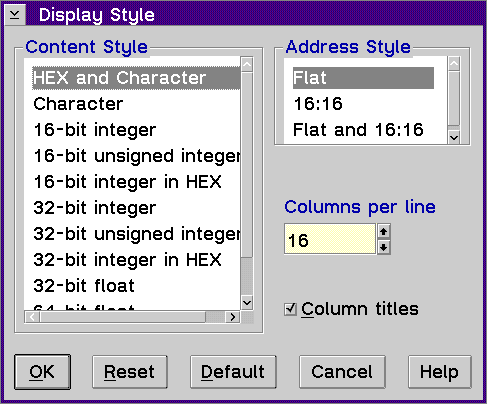

Displays the Display Style window, which allows you to select the format for the storage contents and storage addresses and change the columns per line that display.
Use the Storage Display Style window to select the parameters that control how the storage contents display and set how the storage addresses display.
Content Style Group Heading
Select how you want the storage contents displayed. You can select from several storage display styles.
To select the storage content style:
Address Style Group Heading
Select the available address style.
To select the address style:
Columns per line Entry Field
Select the number of columns per line you want displayed in the Storage window.
Use the Up or Down arrow keys to select the number of columns you want displayed in the Storage window. The available number of columns per line are 1-16.
Enable the Column titles check box if you want to display the titles of the columns in the Storage window.